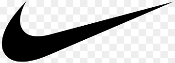
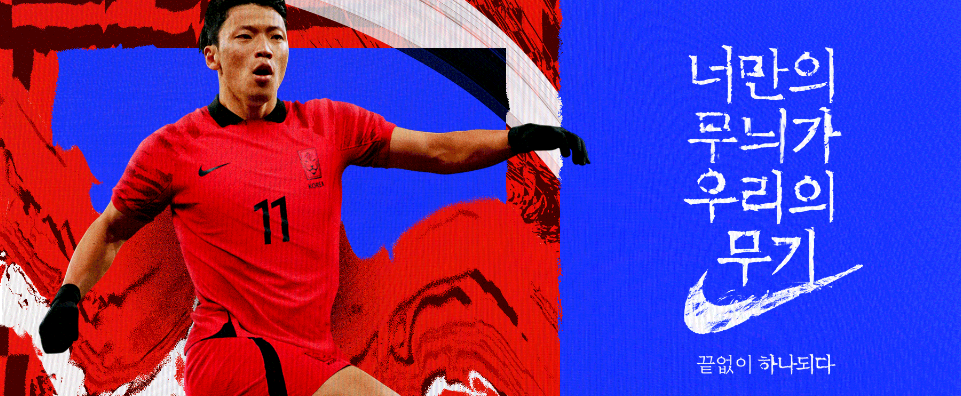

New releases
Man
Women
Kids
Sale
여자옷

대한민국 축구 국가대표팀 저지
한국 축구의 전통과 정신에서 영감을 받아
나이키와 함께 새롭게 탄생한 대한민국 축구 구가대표팀 저지.
다양한 축구 국가대표팀 저지와 함께 만나보세요.
역대 월드컵 저지부터 이번에 새롭게 출시된 저지까지 만나볼 수 있는
특별한 장소로 멤버 여러분을 초대합니다.
Nike Football Studio에 방문하여 대한민국 축구 국가대표팀을 응원해 보세요.